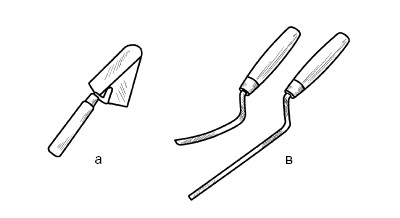
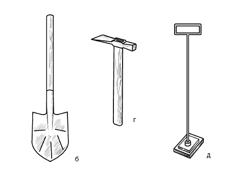
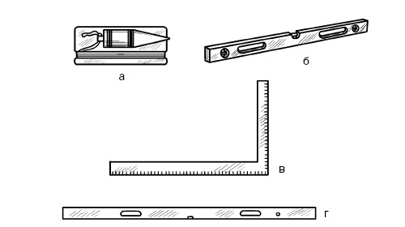
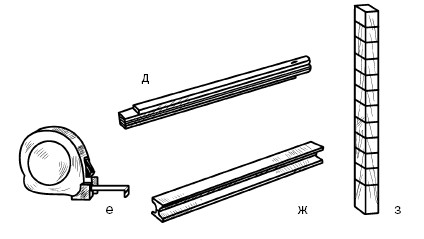
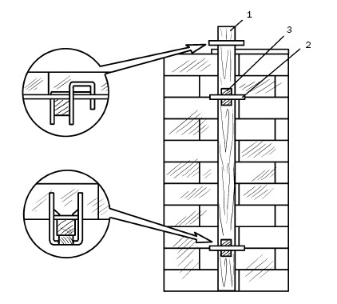
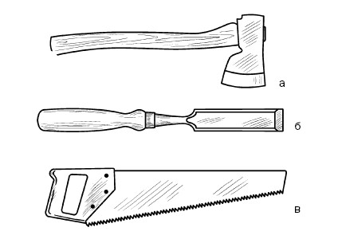
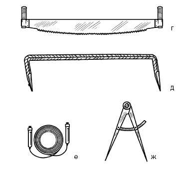
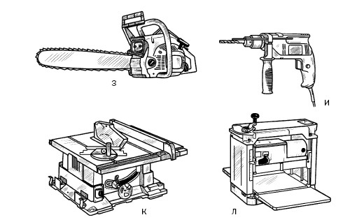

Инструменты.

В зависимости от материала, из которого планируется возводить дом, необходимо иметь соответствующие инструменты и приспособления, при помощи которых будет осуществляться строительство. Если стены будут кирпичными или каменными, то для кладки потребуются инструменты, чтобы набрать раствор, расстелить его, разровнять и т. д. Поскольку иногда требуется не целый кирпич, а, например, половинка или четверть, то каменщику необходимо его рубить и отесывать. Кроме того, мастер должен расшивать швы. Каждая операция выполняется с применением определенных инструментов.


Рис. 13. Инструменты каменщика: а – кельма; б – растворная лопата; в – расшивки для выпуклых и вогнутых швов; г – молоток-кирочка; д – швабровка
Основными (рис. 13) среди них являются:
1) кельма (ГОСТ 9533-81). Это стальная лопатка с деревянной ручкой, с помощью которой разравнивается раствор, заполняются швы, подрезается излишек раствора;
2) растворная лопата (ГОСТ 3620-76), предназначенная для того, чтобы перемешивать раствор, не допуская его расслаивания, подавать его на стену и расстилать;
3) расшивки (ГОСТ 12803-76), при помощи которых швам можно придать выпуклую, вогнутую, треугольную, прямоугольную заглубленную форму;
4) молоток-кирочка (ГОСТ 11042-83), использующийся при рубке и теске кирпича;
5) швабровка, представляющая собой резиновую прокладку размером 140 x 140 x 10 (12), которая помещена между фланцами и закреплена на стальной ручке. С ее помощью труднодоступные места, например вентиляционные каналы, очищаются от раствора, который выступил из швов.


Рис. 14. Контрольно-измерительные инструменты (размеры
указаны в миллиметрах): а – отвес; б – строительный уровень; в – угольник; г – уровень; д – складной метр; е – рулетка-правило; ж – дюралюминиевое правило; з – порядовка
По окончании ряда проводится проверка качества кладки. Для этой цели предназначаются контрольно-измерительные инструменты (рис. 14):
1) отвес (ГОСТ 7948-80). С его помощью каменщик контролирует вертикальность стен, простенков, углов и др. Этот инструмент в зависимости от того, проверяется ли вертикальность кладки в пределах одного или нескольких этажей, имеет разный вес. Для первого случая он составляет 200–400 г, для второго – 600–1000 г;
2) строительный уровень (ГОСТ 9416-83), который предназначен для контроля горизонтальной и вертикальной плоскостей. Может иметь длину 300, 500 и 700 мм. Конструктивно он представляет собой алюминиевый корпус с двумя стеклянными ампулами, изогнутыми по кривой большого радиуса и заполненными незамерзающей жидкостью, в которой остался пузырек воздуха. Принцип работы прибора прост: положите его на поверхность стены и посмотрите на положение пузырька. Если он замер посередине между делениями ампулы, то поверхность горизонтальна; если он смещается в какую-либо сторону, значит, имеются отклонения, и они тем больше, чем дальше от центра остановился пузырек. Таким же образом проверяется и вертикальность кладки;
3) правило-уровень. Этот инструмент выполняется из отфугованной деревянной (сечение 30 x 80 мм, длина 1,5–2 м) или дюралюминиевой рейки (длина 1,2 м), имеющей особый профиль. С его помощью контролируется лицевая поверхность выполненной стены;
4) угольник, предназначенный для проверки углов;
5) рулетка;
6) складной метр;
7) шнур-причалка. Это крученый шнур диаметром 3 мм, который каменщик натягивает между порядовками и маяками. В процессе кладки на него ориентируются, чтобы контролировать горизонтальность и прямолинейность рядов, толщину швов;
8) порядовка, представляющая собой деревянную рейку (сечение 50 x 50 или 70 x 50, длина 1,8–2 м) с делениями через каждые 77 мм, что равно толщине одного ряда с раствором (65 мм + 12 мм). Порядовки изготавливаются и из металлического уголка (60 x 60 x 5 мм), на ребрах которого нарезаются деления глубиной 3 мм с шагом 77 мм или имеются отверстия для привязывания шнура-причалки.

Рис. 15. Установка порядовки: 1 – рейка; 2 – держатель; 3 – клин
С порядовкой нужно управляться следующим образом (рис. 15):
1) приставьте ее к стене так, чтобы деления были обращены в вашу сторону;
2) зафиксируйте порядовку к кладке П-образными скобками с поперечными держателями. Чтобы это сделать, через каждые 6–8 рядов в горизонтальные ряды вставляйте скобы. При этом не забывайте следить, чтобы они располагались строго одна под другой;
3) уложив над второй скобой 1–2 ряда, вставьте в нее порядовку и закрепите ее клиньями. Дополнительно порядовка удерживается причалкой, которая привязывается к поперечным держателям;
4) снимите порядовку вместе с держателями (для этого аккуратно раскачивайте ее в плоскости, перпендикулярной стене), не извлекая клинья, и переставьте выше.


Рис. 16. Плотничьи инструменты: а – топор; б – стамеска;
в – ножовка; г – двуручная пила; д – скоба; е – водяной уровень; ж – черта

Рис. 16 (продолжение). Плотничьи инструменты: з – бензопила; и – электродрель; к – циркулярная пила; л – электрорейсмус
Если вы хотите построить деревянный дом, то потребуются инструменты, с которыми работает плотник (рис. 16). Назначение каждого из них понятно и не нуждается в комментариях, за исключением, возможно, циркулярной пилы и электрорейсмуса. С помощью первой осуществляется распиловка лесоматериалов, второй представляет собой стационарный рубанок.